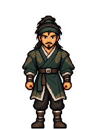
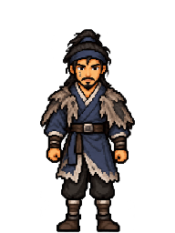
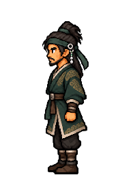
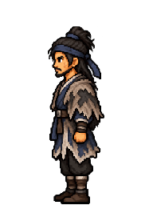
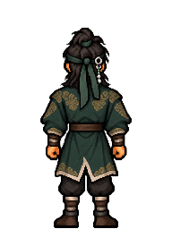
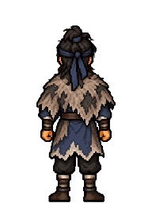
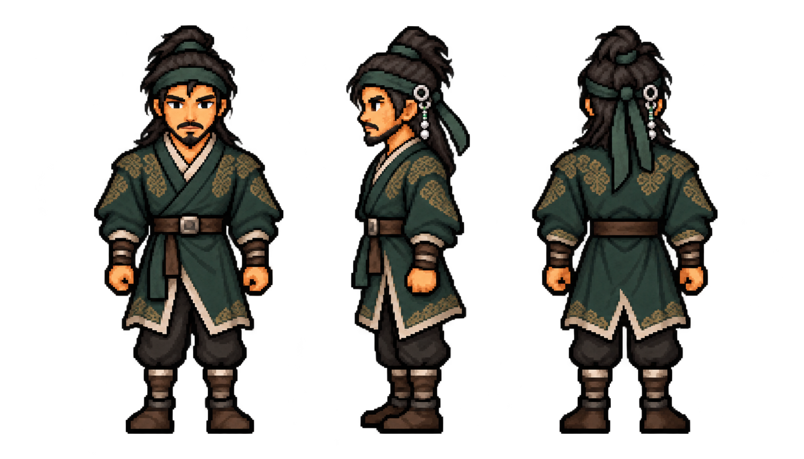
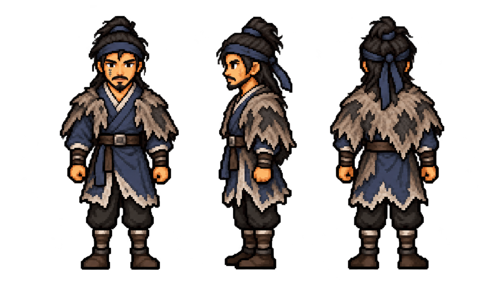

← View on game backgroundsLin Chong · Imperial instructor → Exile
The same face and athletic build across both story outfits. The instructor wears forest-green brocade and silver hair ornaments. The exile wears slate blue and a weathered mantle, with the mark on his right cheek. These are standing design views, ready for comparison before animation.
front

Lin Chong · official
Lin Chong · exileleft

Lin Chong · official
Lin Chong · exileback

Lin Chong · official
Lin Chong · exileOriginal source · Instructor

Original source · Exile

Classic style reference · Song Jiang

192 × 256 review frames at 24 × 32 world size. Original source colours preserved; one shared proportional reduction for all six views.